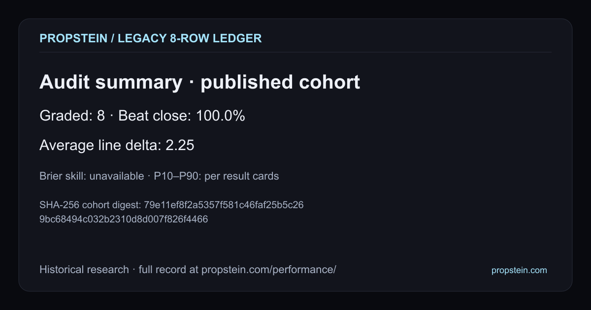
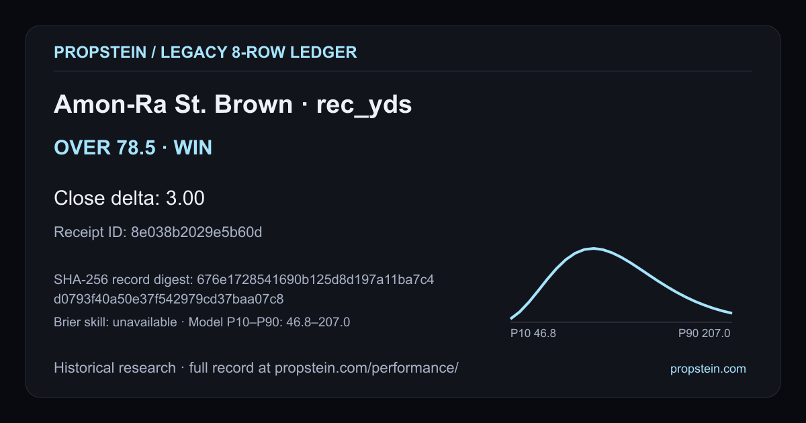
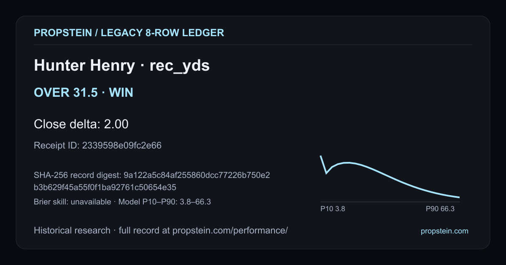
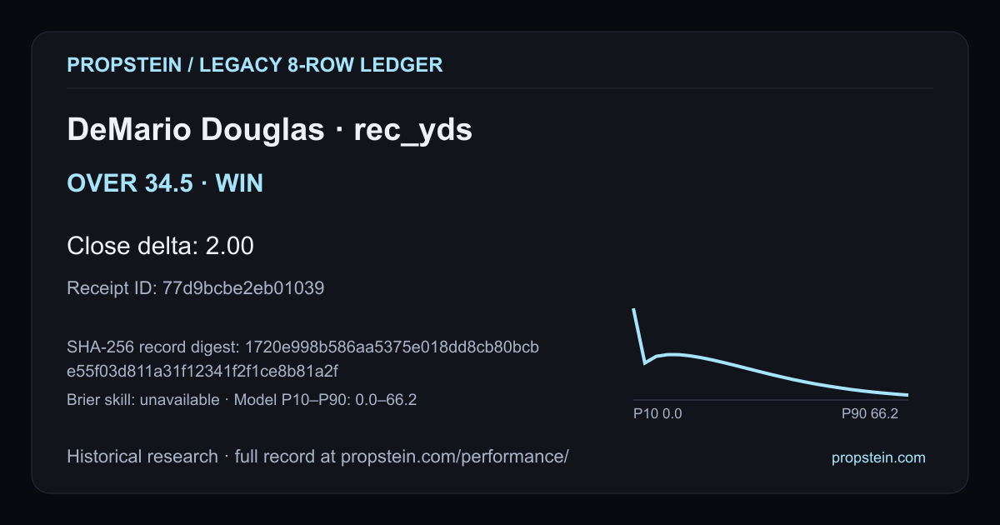
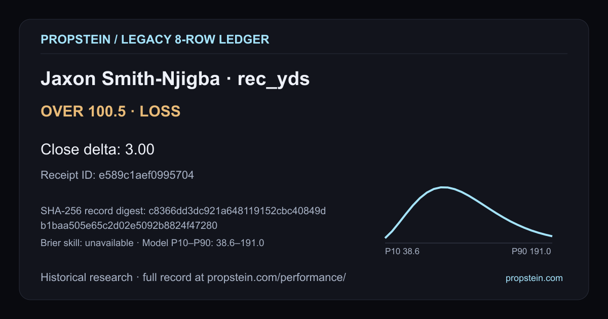
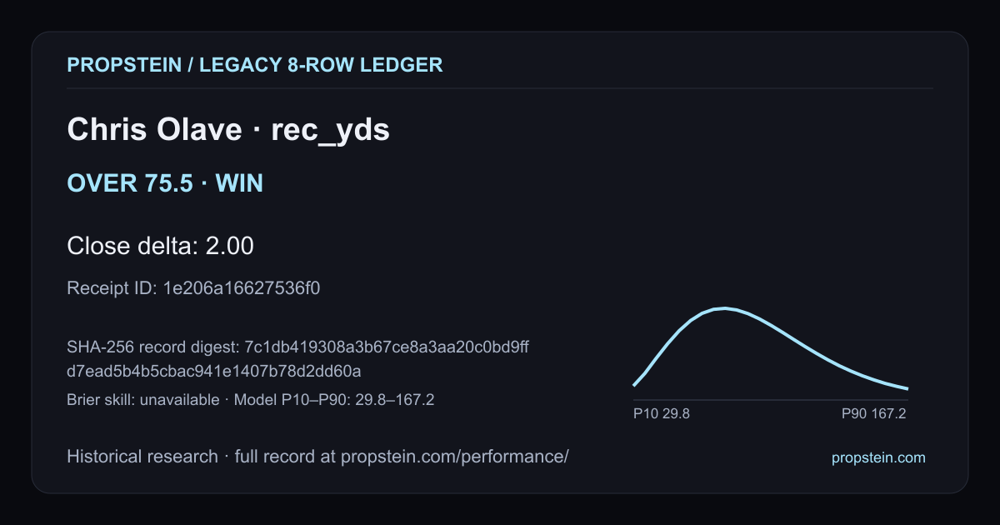
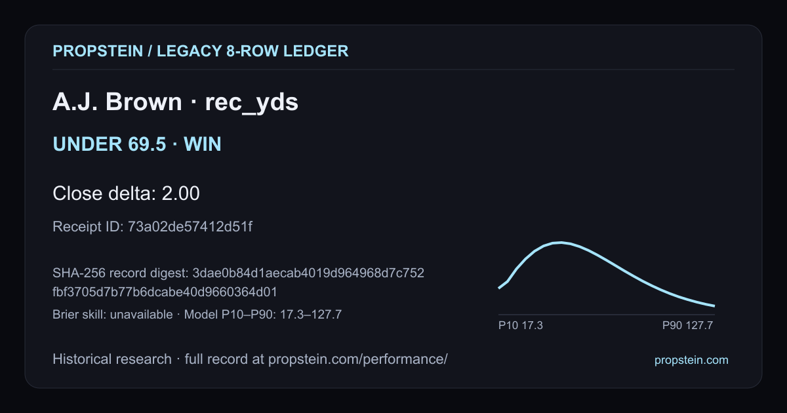
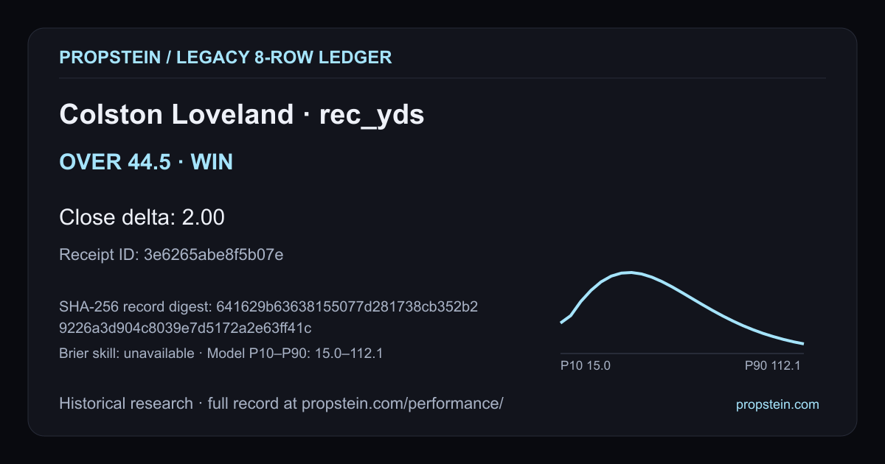
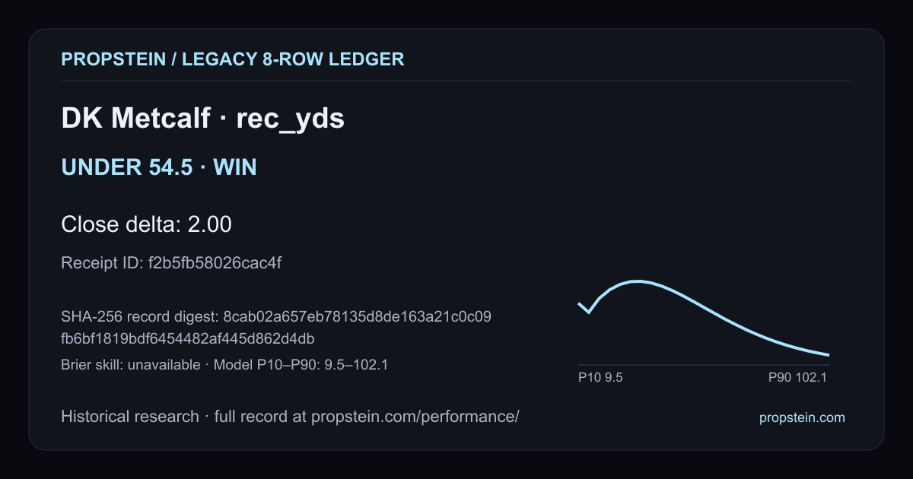

PROPSTEIN / LEGACY 8-ROW LEDGER
Historical descriptive graphics, including losing results. The SHA-256 on each card is a digest of its published data row, not a sportsbook quote verification receipt. This legacy hand ledger cannot be combined with the full-board cohort without matching event IDs.
Summary

All 8 results

Amon-Ra St. Brown · WIN · Open PNG


Hunter Henry · WIN · Open PNG


DeMario Douglas · WIN · Open PNG


Jaxon Smith-Njigba · LOSS · Open PNG


Chris Olave · WIN · Open PNG


A.J. Brown · WIN · Open PNG


Colston Loveland · WIN · Open PNG


DK Metcalf · WIN · Open PNG